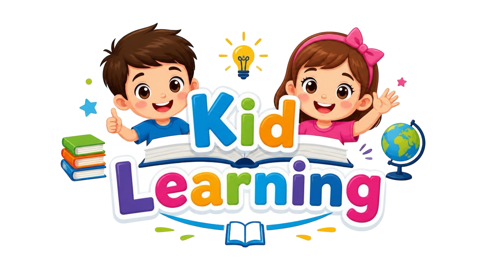
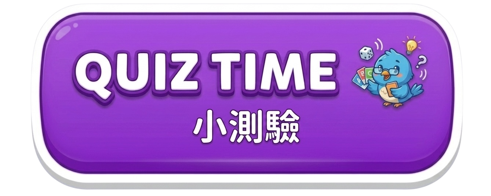
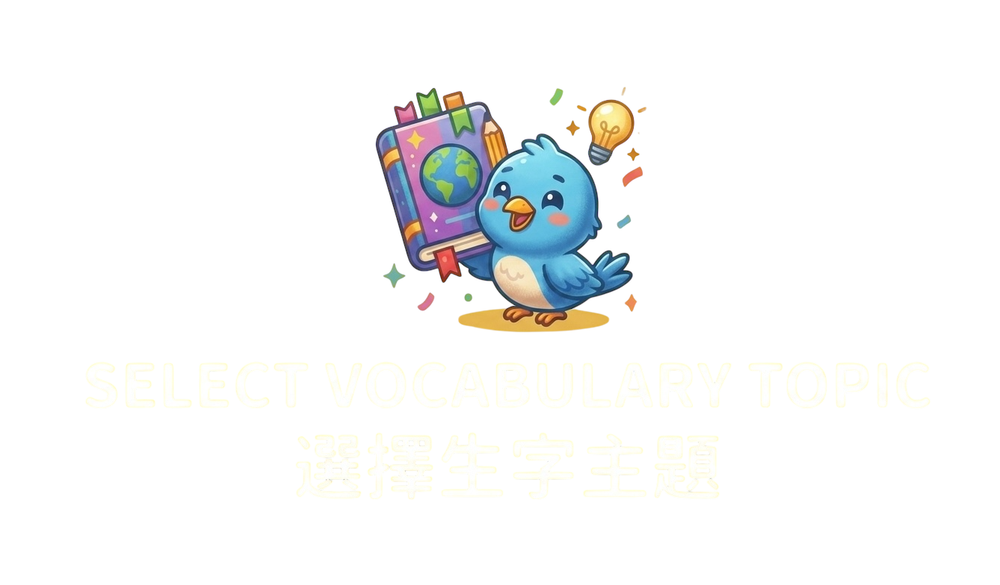
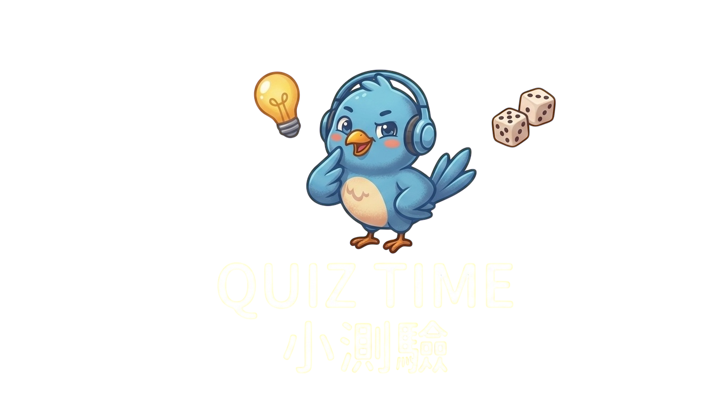

返回主頁
🍎 Fruits
🦁 Animals
🚗 Transports
👨👩👧👦 Family
🥦 Vegetables
☀️ Weather
主題
返回主題選單
📝 開始小測驗
返回主頁
開口講英文
返回主題
📋 Full List
🧩 Step-by-Step Practice
🗣️ Play Full Dialogue
⏹️ Stop
⬅️ Previous
1 / 8
Next ➡️

返回生字頁
問題 1/6
🍎
這是什麼？
請選擇正確的英文答案
🔊 再聽一次
⬅️ 上一題
下一題 ➡️
🎉
恭喜完成！
你答對了 0/6 題
🌟🏆🌟
滿分！你是生字小天才！
🔁 再玩一次
📚 返回生字頁
返回主頁
🎯
每次隨機抽 8 題，題目嚟自所有生字主題📚揀你想要嘅挑戰模式
🔊
Listening Quiz
聽英文讀音，揀出啱嘅圖示
📖
Word Matching Quiz
睇英文生字，揀出正確中文
返回選擇
問題 1/8
🔊 再聽一次
❓
Apple
請選擇正確答案
⬅️ 上一題
下一題 ➡️
🎉
恭喜完成！
你答對了 0/8 題
🌟🏆🌟
滿分！你是生字小天才！
🔁 再玩一次
🎲 返回選擇
💡 普通話提示